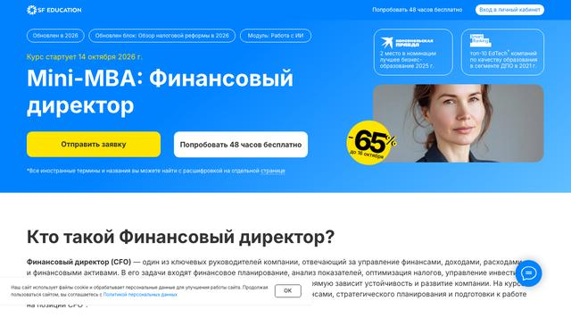
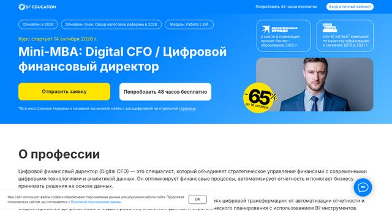
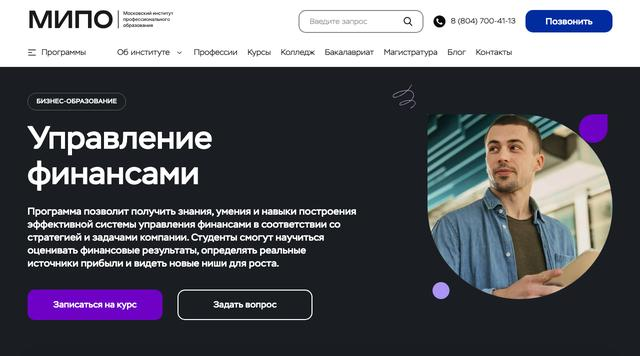
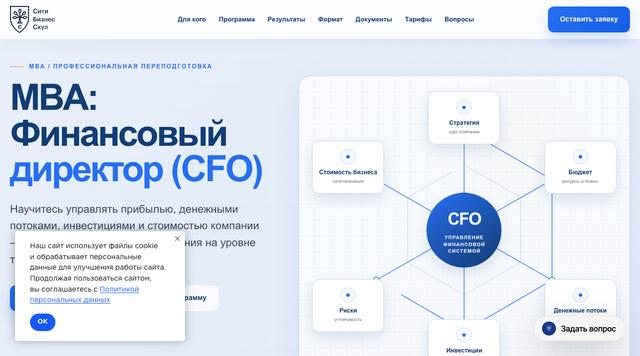

Mini-MBA: Финансовый директор
- Цена
- 180 250 ₽
- Срок
- 10 месяцев (16 модулей)
- Объём
- —
- Отзывы
- 18 отзывов
Удостоверение о повышении квалификации
Промокод на −15%
Сверено с сайтами школ · методика
В подборке 4 программы от 3 школ. Ниже — цены, сроки, документы и разбор, как выбрать.
Программы с MBA или mini-MBA в названии. В России MBA не считается уровнем образования, поэтому итоговый документ у программ разный — он указан в карточке каждого курса.
Не тот формат? Смотрите все курсы финансового директора в общем каталоге или пройдите тест подбора — он покажет три подходящие программы.

Удостоверение о повышении квалификации

Диплом ДПО

Диплом MBA

Диплом о профессиональной переподготовке
Одна строка — одна программа. Клик по строке открывает подробное описание.
Не уверены, что выбрать? Тест подберёт 3 программы за минуту →
Программы MBA и mini-MBA с финансовым уклоном подходят тем, кто из финансов движется в топ-менеджмент или уже руководит финансовой службой и хочет обсуждать с собственником стратегию, а не только цифры. Кроме финансов здесь стратегия, маркетинг, управление людьми и операциями.
Mini-MBA длится несколько месяцев и сосредоточен на ключевых управленческих блоках. Полный MBA занимает от года, требует регулярной нагрузки и стоит дороже. В России MBA — это дополнительное профессиональное образование, а не учёная степень, и документ по итогу у разных программ разный.
Смотрите не на бренд, а на содержание: какая доля часов отдана финансам, как совмещаются онлайн и очные модули, кто преподаёт и будет ли итоговый проект на задачах вашей компании.
MBA даёт широкую картину управления. Для глубокого бюджетирования или МСФО добавьте отдельную программу.
Под словом MBA продаются программы очень разного объёма. Сравнивайте часы, срок и документ.
Полный MBA — это занятия каждую неделю больше года. Оцените нагрузку заранее.
Mini-MBA короче — несколько месяцев — и держит фокус на одном направлении. Полный MBA идёт от года и охватывает все функции управления.
Нет. В России это программа дополнительного профессионального образования. Для поступления обычно нужны высшее образование и опыт руководства.
Нет. Он полезен, если цель — совет директоров, топ-менеджмент или смена отрасли. Для работы финдиректором обычно хватает профильной переподготовки и опыта.
Да, в подборке есть дистанционные программы и смешанные — с очными модулями.
Да, если у школы есть образовательная лицензия: вычет — 13% от оплаченной суммы (при более высокой ставке НДФЛ — больше). Лимит 150 000 ₽ в год общий для социальных вычетов; подробный расчёт — на странице каждого курса.
Подсветка показывает лучшее значение в каждой строке: ниже цена, короче срок, больше часов и отзывов.